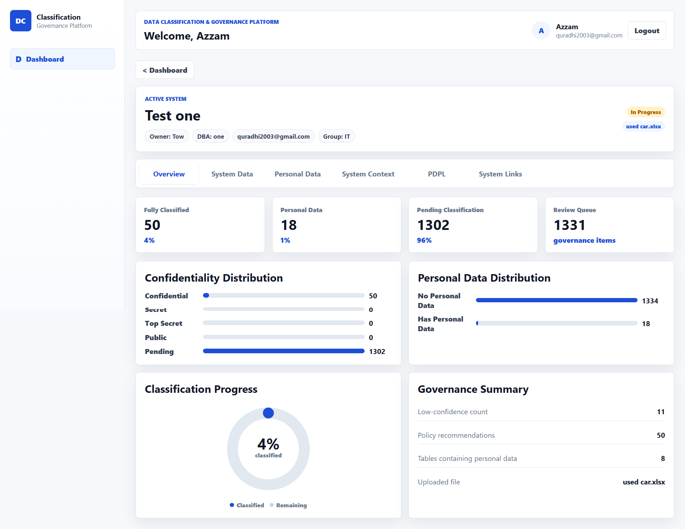
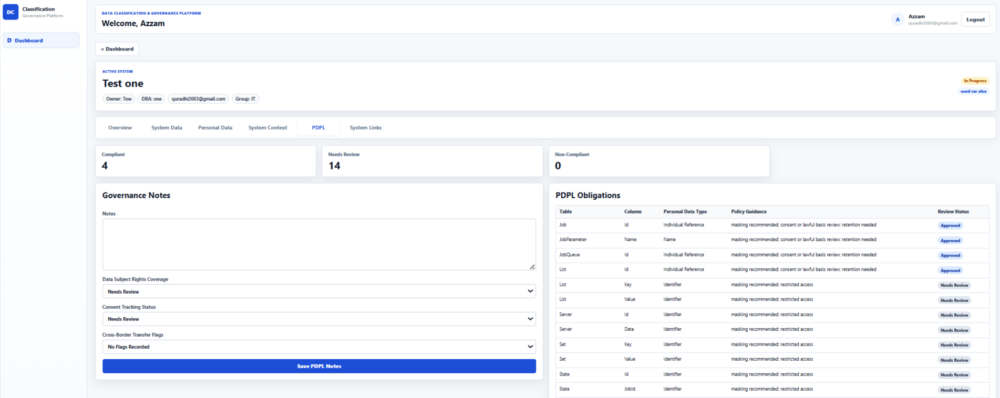

A full week per system
A single system can take a full week of analyst attention before review even begins.
A web platform that takes your Excel or CSV metadata file, classifies every field by confidentiality and personal data status, and produces a professional governance report.
Built as a senior project at the University of Bahrain. Designed for the way data governance work actually happens: fast first pass, human review, structured output.
Built for
A typical classification engagement covers dozens of systems and thousands of fields. The work today is done in Excel: one analyst, one spreadsheet, one row at a time.
A single system can take a full week of analyst attention before review even begins.
Two analysts can produce two different classifications for the same fields.
Fields that fall under PDPL obligations are easy to overlook in a spreadsheet-only review.
The output Excel file is often stale within weeks of delivery and disconnected from future updates.
The platform was built to solve exactly this: not data governance in general, but the manual classification step that consumes the most time and produces the least durable output.
The Bahrain Personal Data Protection Law and the Saudi Personal Data Protection Law both assume that organizations know what personal data they hold and where. Most do not, not because they do not try, but because no practical tool exists between two extremes.
This platform sits in the middle: light enough to deploy in a day, structured enough to produce auditable output.
The platform takes one input and produces one output, with structured review in between.
An uploaded file containing database metadata such as table names, column names, and data types.
A multi-sheet Excel report with Overall, System Data, Personal Data, and PDPL sheets ready for client delivery or internal documentation.
The workflow keeps the AI pass fast while preserving the human review needed for real governance work.
Add the system name, owner, group, and any context notes that help interpret the data.
Drop in an Excel or CSV file containing table and column information.
The platform groups fields by table, sends them to the OpenAI API, and stores the structured response.
Use the Edit View to fix AI errors. Use the Personal Data tab to approve fields that genuinely qualify as personal data.
Download a multi-sheet Excel report. Hand it to a client, use it as documentation, and update it next quarter.
Each feature supports a practical governance task, from intake to approval to client-ready reporting.
Powered by the OpenAI API with structured JSON responses and batch processing by table.
Four-level scheme: Public, Internal, Confidential, and Strictly Confidential.
Each field is independently flagged with reasoning.
Override any AI classification; changes persist immediately.
Record-level approve and revoke; only approved records flow to PDPL.
Add review status and governance notes per personal data field.
Overall, System Data, Personal Data, and PDPL sheets, professionally formatted.
Tag-based notes attached to each system.
Categorized reference URLs for data dictionaries, documentation, and regulatory references.
Multi-system overview with classification status per system.
The project applies four areas of computer science to a single working system.
The project is documented as a senior project report under the supervision of Dr. Abdulla Ahmed Alasaadi, with all DFDs, the ERD, and the testing strategy traceable from requirements to implementation.
The platform does not replace the analyst. It removes the tedious first pass so the analyst can spend time on the parts that need judgment.
Running multi-system classification engagements.
Maintaining ongoing data inventories.
Preparing for PDPL review.
Needing a structured entry point.
Looking for a repeatable workflow across clients.
The senior project version is a working single-tenant application. The path to a commercial product is concrete.
Multi-tenant deployment for governance teams who want a permanent classification tool.
Used by firms internally to deliver classification engagements faster.
Packaged specifically for PDPL-driven assessments.
Direct database connectivity, sector-specific rules, GDPR support, and audit trail.
The market gap between enterprise platforms and manual spreadsheets is the project's product opportunity. The senior project version is the proof that the workflow works.

Login Page

Dashboard
Add New System

System Data — Classification View
System Data — Edit View

Personal Data Tab

PDPL Tab
System Context Tab

Excel Export Preview
Computer Science, University of Bahrain.
This project came from watching real classification work happen the hard way: in Excel files, across long meetings, without consistent output. The platform is an attempt to solve that problem in a way that is actually usable.
It reflects a focus on data governance, practical AI applications, and software that addresses operational problems rather than hypothetical ones.
The senior project version is live. You can register, create a system, upload metadata, run classification, and download a report: the full workflow, end to end.
Explore the Platform